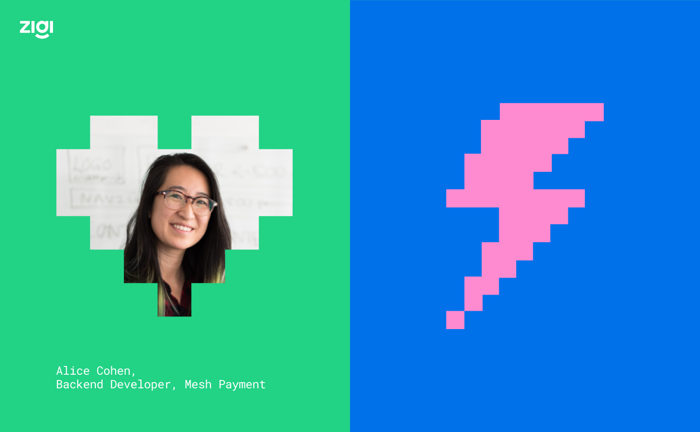
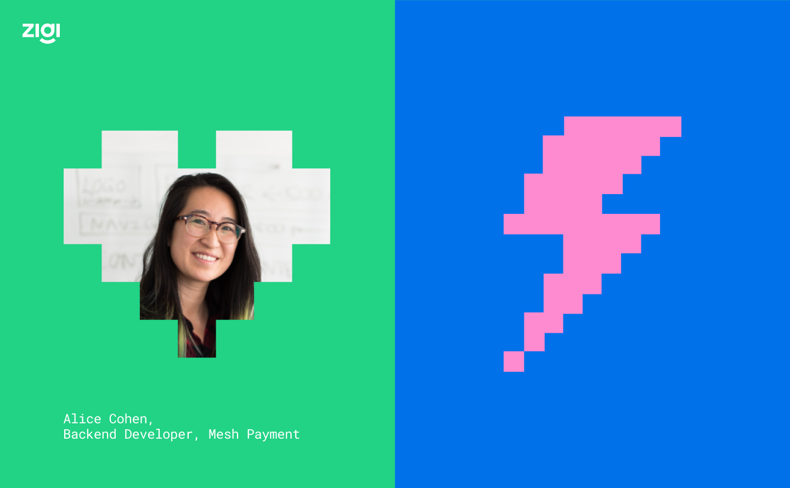
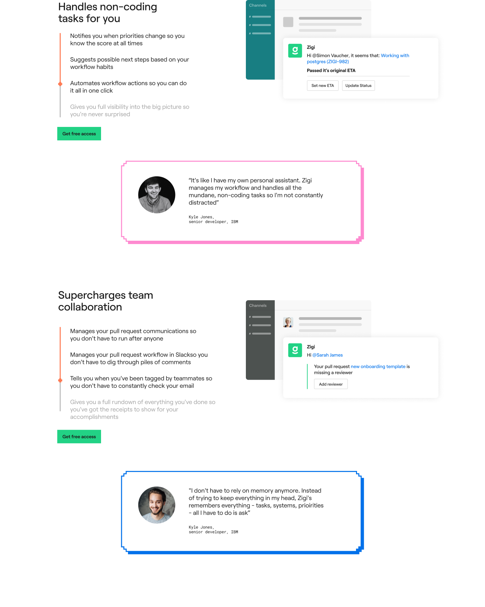
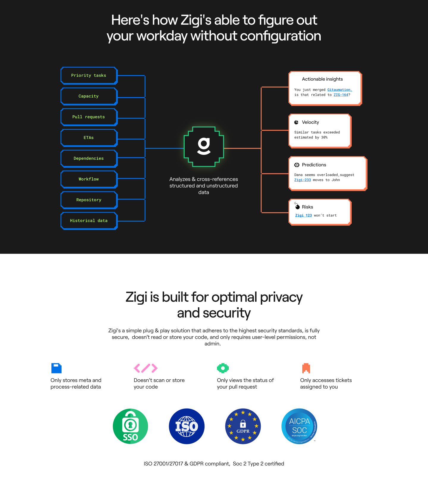
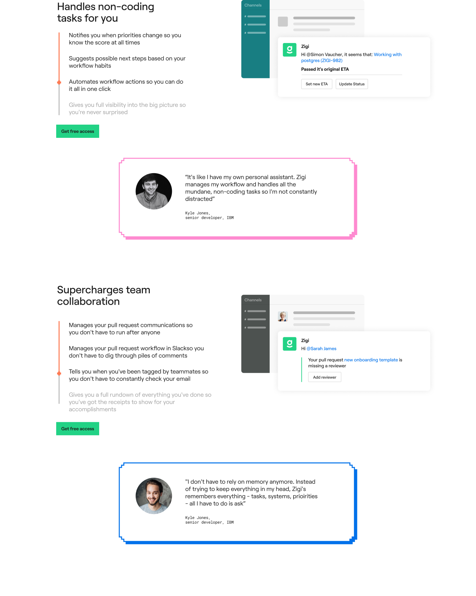
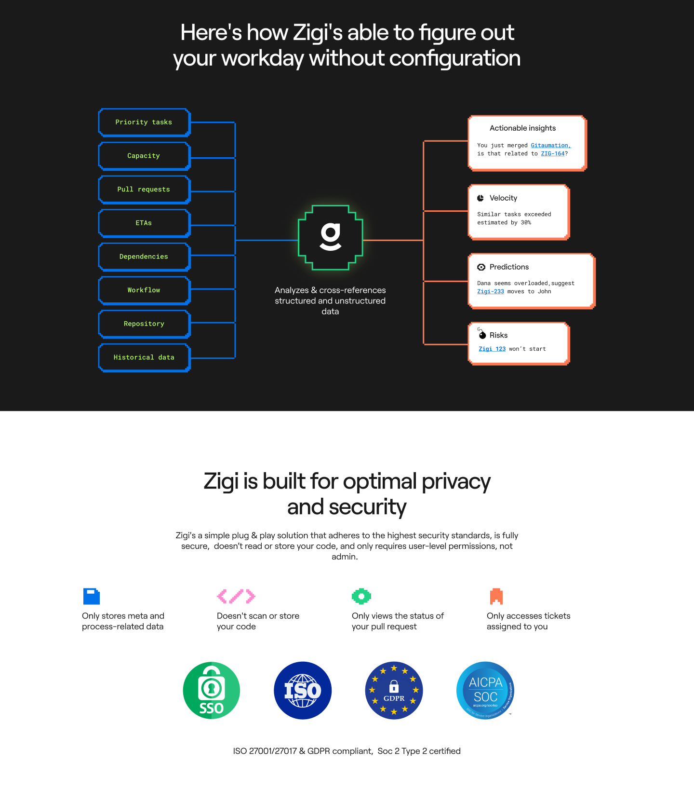
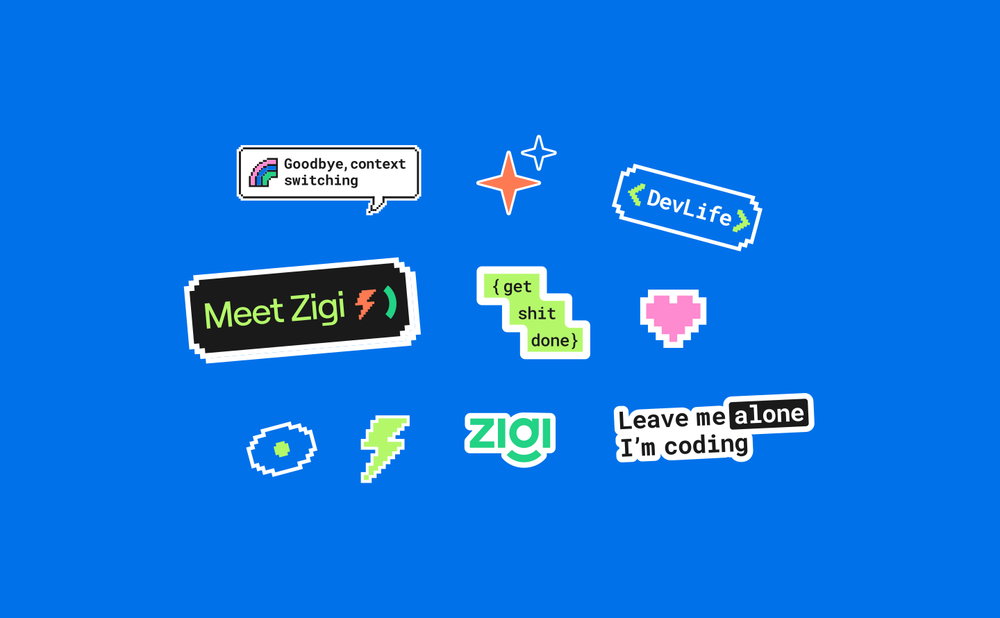
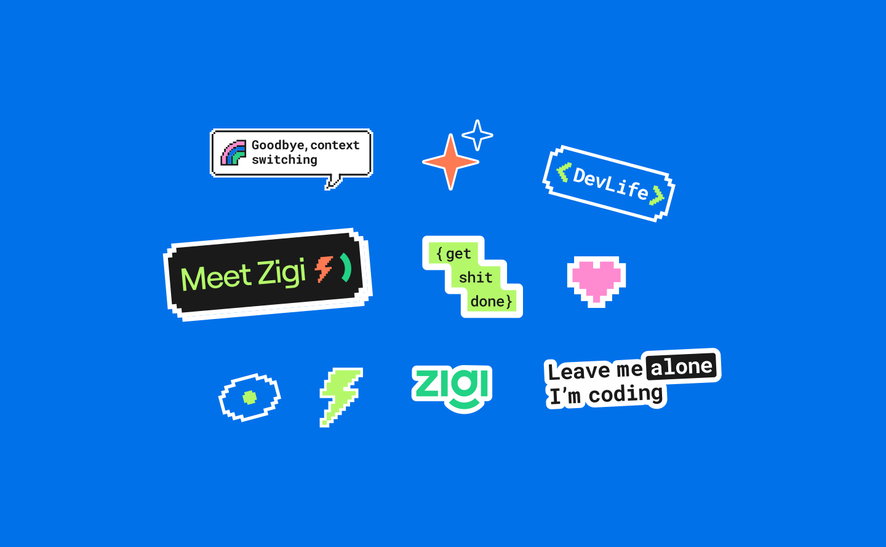
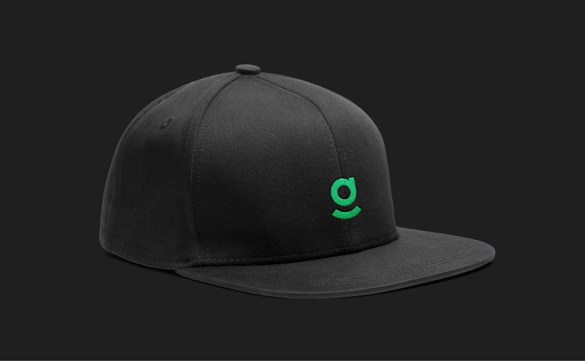
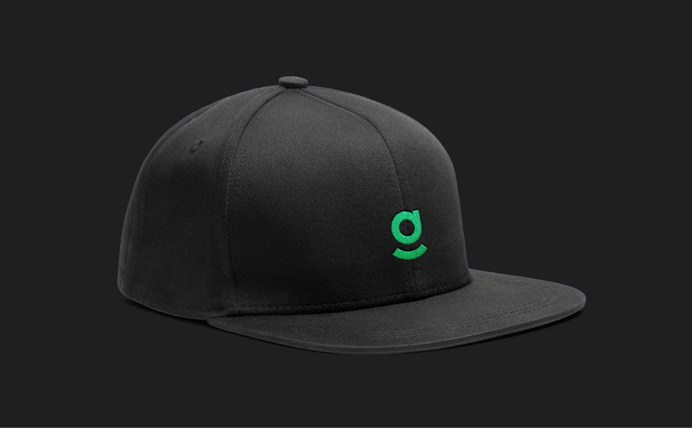

Zigi
A 10-day Brand sprint for Zigi, a developer’s assistant for non-coding tasks. Zigi reduces the noise that developers face by handling all their non-coding mundane tasks, so they can focus on coding and innovation.
Full website - zigi.ai
Client | Zigi
Art Direction | Studio Under
Brand lead designer | Anastasia Vlasenko

 



 





 

 
